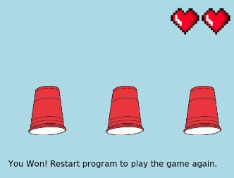
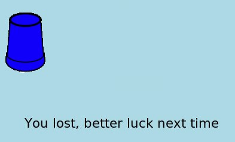

My partner and I created a build your own flower game where you are able to specify the color and shape of the petals based of questions the program asks. After choosing, it generates your personalized flower with a pretty background consisting of grass, a tree, sun, bird and a butterfly. To make our game, we primarily utilized the python turtle commands using Replit.
Super SUPER FUN Cup Game


One of the three cups is chosen to be special at random, cups shuffle and then stop. If the user chooses the wrong cup, they lose a heart. If you lose 2 hearts then you,lose. If the user chooses the right cup, the screen writes "You Won". If the user loses both lives, the screen writes "You Lost Try Again".
Keep Out Of Lava Scratch Game
The user is in control of a paddle and they have to move it around to hit the ball to keep it from falling in the lava. The background changes every time the game is started. If the user lets the ball fall into the lava then it goes to a you died screen, from there the user then can press the green flag to play again.